Why network?
Promote your work
Get citations!
Get hired!
Find potential collaborators
Get advice from fellow experts
Access other's work
Get citations
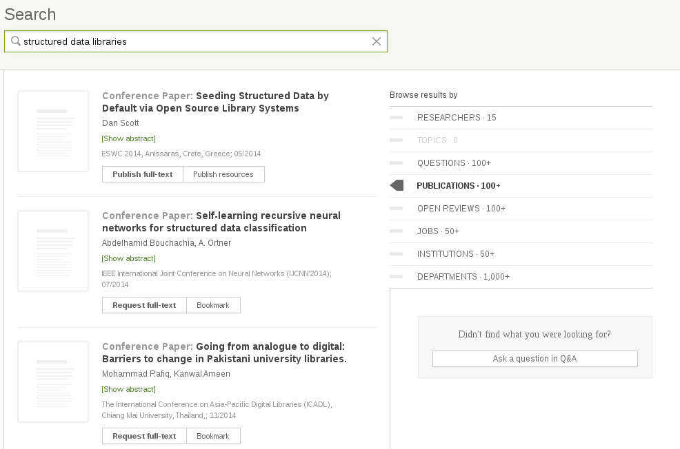
ResearchGate offers a searchable database of abstracts for papers; then gives you
the ability to request a copy of that paper from the author. If that author is you,
then you might have just garnered yourself a citation.
Note that if the author acquiesces, the paper will be uploaded to ResearchGate
and become available in full-text to anyone on the network. More on that later.
Get hired
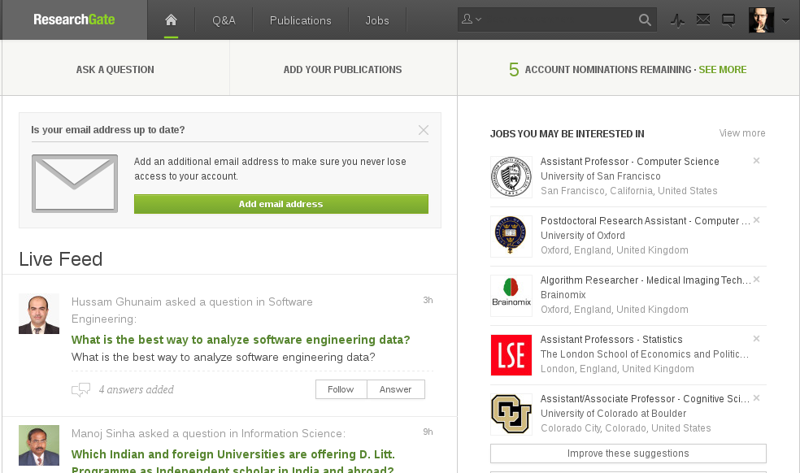
Your home page on ResearchGate provides a feed of potential jobs, which it tries
to match for you based on your skills and publications.
Get advice from fellow experts
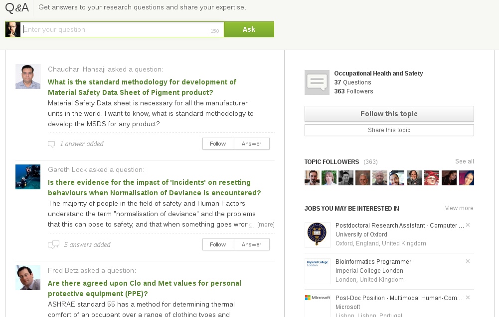
The Q&A section contains tons of active communities, including one on
Occupational Health and Safety.
Promoting your work
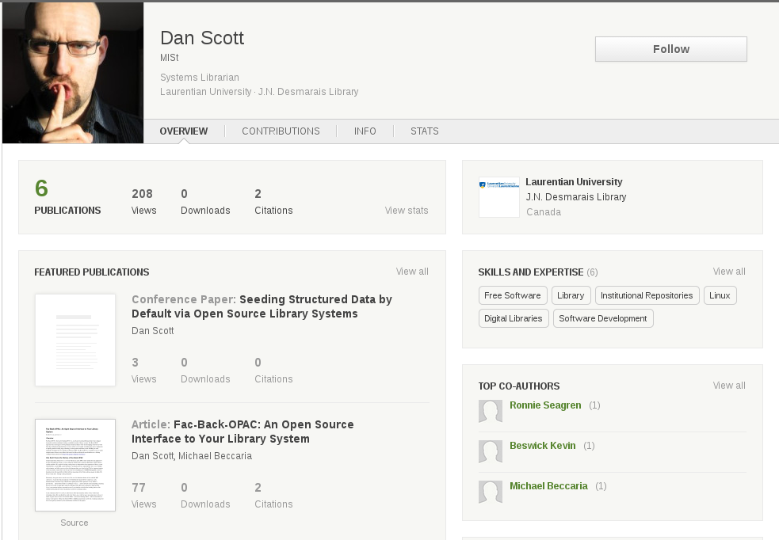
ResearchGate provides an attractive layout for your profile page, showing your
high-level statistics, recent publications, institutional affiliation, skills,
and co-authors.
Promoting your work (2)
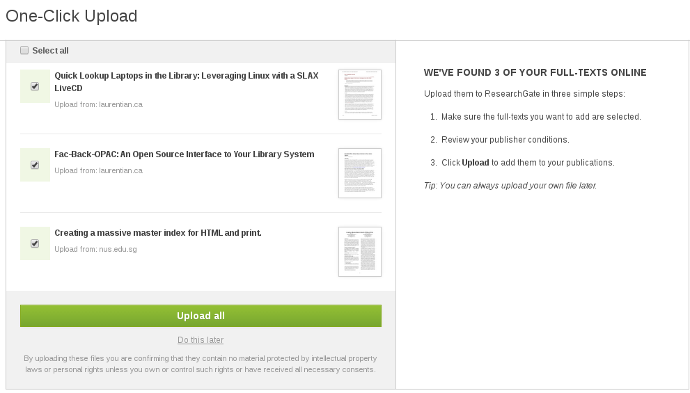
ResearchGate searches for copies of your work that already live on the
web and offers to upload them all for you to ResearchGate with a single
click.
Promoting your work (3)
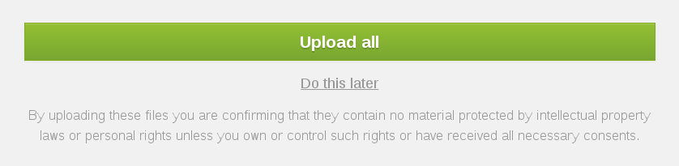
Uh-oh. This is where you take on all responsibility for the work that you're
uploading. Are you sure that you have the right to contribute a copy of your
paper to ResearchGate?
Promoting your work (4)
ResearchGate Terms and Conditions
Users may only request storage of such information that they may legally store and publish. Users must not request to store any information that infringes any third party's copyright, trademarks, other intellectual property rights or any other rights.
Users indemnify the Provider from any claims raised by third parties in reference to any information that is stored on request of the respective User. The indemnification covers all adequate expenditures, including court and lawyer fees.
Yeah, that's not good. Publishers aren't likely to turn directly on their authors, but they will go after web sites like this--and ResearchGate is prepared to pass on their legal costs to their users.
ResearchGate: Pros
Researcher profile/promotion
Q&A forums
Job hunting
Literature awareness service
Academia.edu
15M members, vs. RG's 5M
Open to anyone over 13, vs. RG's university email address requirement
Like RG, terms of use place burden on users
Mendeley
Primary use case: reference management
Document sharing and collaboration on the side
Researcher profile/promotion
Like RG, terms of use place burden on users
Making your research freely available
Publish in non-predatory open access journals
Keep your copyright
Often an "author pays" model
Check self-deposit policy of journal
Many journals allow you to upload your pre-print to your institutional repository
Institutional repository?
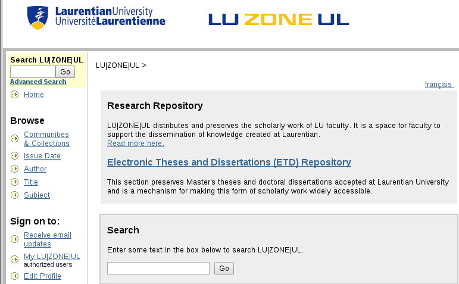
We don't expect anyone to actually start their search at the institutional repository;
it's simply a destination.
LU|Zone|UL
Run by the library since 2007 to provide access to the scholarly activity of the university community
Contents are harvested and indexed in Google Scholar, WorldCat, and other general search engines
Contact Dan Scott <dscott@laurentian.ca > for help
"Help" in terms of checking journal policies, getting scholarly activity deposited, etc
Google Scholar
Great at tracking down freely available copies of articles
Offers clean researcher profiles and (minimal) networking
Intelligent literature awareness service
Interesting citation metrics
Networking = "Follow" action (which adds alerts based on researcher activity) and notification when a new citation of your work occurs.
Intelligent in so far as it learns what you've published and what you're searching for and starts suggesting articles based on that.
Low energy investment, decent rewards.
Access to research: the dark side
r/scholar, LibGen, SciHub
I highly recommend staying away from these.
r/scholar
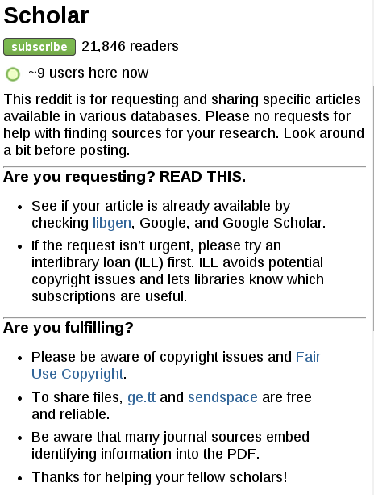
r/scholar is a subreddit (subsection of reddit.com).
LibGen
Like The Pirate Bay, with a focus on written works
Entire corpus distributed via BitTorrent
Pretty clearly some massive violation of copyright going on
SciHub
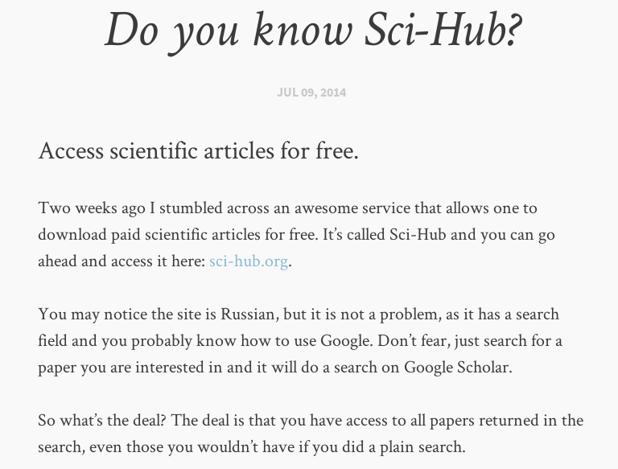
At what point do you start thinking "this sounds fishy":
* "download paid scientific articles for free"
* "the site is in Russian, but it is not a problem"
* "Digging a little deeper, you’ll notice by the URL that you aren’t, in fact, in Google domain. Sci-Hub puts a “.sci-hub.org” after the original domain, in this case after the “scholar.google.com”, giving us the URL “scholar.google.com.sci-hub.org”."
SciHub
Uses phished or freely shared(!) user names and passwords to access university collections.
At Laurentian, abused accounts have resulted in off-campus access to ScienceDirect and other resources being shut down.
BTW, your proxy account == your email account == many other Laurentian accounts.
It's just a bad idea.
RACER
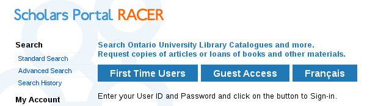
RACER gives the library statistics to justify new journal subscriptions.Articles are delivered within a week, usually a few days, via email. For free!
Your use is covered under fair dealing copyright provisions.
Twitter: a promotion engine
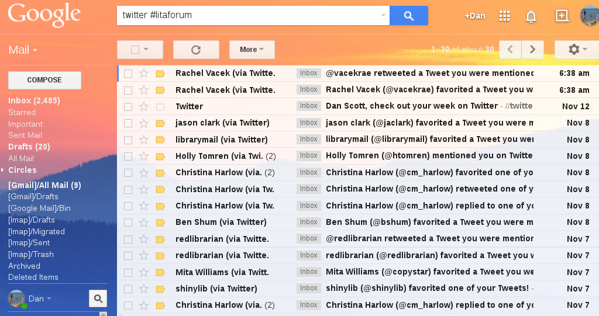
Not great for discussion (140 char limit).
But good for promoting your work.
Bolster it with a blog post if you have a blog.
Get "brand" accounts (@CROSH, @LaurentianU, etc) to retweet and amplify your work.
Twitter can reward the sassy
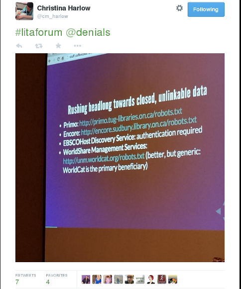
Really comes into its own during conferences, with hashtags.
Influential Tweeters not necessarily the most prolific Twitter users. :)
But beware mob behaviour. Fire can throw light, but can also burn.
Summary
Promote :
Publish in open-access journals
Deposit copies in LU|Zone|UL
Create researcher profiles in Google Scholar & other services
Tap into Twitter brand accounts (@CROSH_CRSST and @LaurentianU )!
Find potential collaborators :
Create researcher profiles in Google Scholar & other services
Get advice from fellow experts :
Maybe check out ResearchGate's community
Access other's work :
Google Scholar and RACER requests